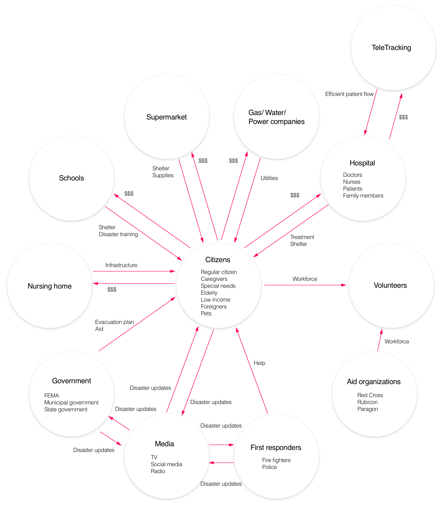

GUERILLA RESEARCH
How can we help caretakers of special needs populations make better decisions?
Our research phase can be distinctely divided into two main categories.
Exploratory
Hospitals have an important role to play in a community, especially during disasters where stressed-out citizens choose to seek refuge inside the hospital’s facilities. But, surges of people sheltering at hospitals can compromise operations and quality of patient care. How might we design a system that balances these two needs?
METHODS USED
GUERILLA RESEARCH
How can we help caretakers of special needs populations make better decisions?
SECONDARY RESEARCH
of special needs populations make better decisions?
INTERVIEWS
How can we help caretakers of special needs populations make better decisions?
SURVEY
How can citizens understand the capacity/availability of hospitals and alternative


INSIGHTS
1. A significant percentage of those sheltering in hospitals are citizens with special needs.
Some other people who shelter at hospital include:
People who have an immediate medical need and need treatment.
Special needs citizens, who need resources that other shelters may not be able to provide. These citizens will often bring caregivers or family members with them.
Everyday citizens
Who have not prepared for the disaster and come to shelter at the hospital as a last resort.
Who live close by and view the hospital as a part of the community.
Who cannot find the resources they need anywhere else.
2. Hospitals struggle with the surge of non-injured citizens during a disaster.
The main problems faced by the hospitals due to the surge include:
A lack of space to house them.
Difficulty tracking accounting for non-patients, since there is no official tracking software for them.
A tax on resources, such as food, staff, and transportation.
Loss of Resources
⁃ Electricity, tech systems, etc. can all fail during a disaster, creating challenges for hospitals who do not have backups.
⁃ Communication with other entities
⁃ Coordination with other entities such as first responders, the county, and NGOs is challenging and can lead to miscommunication.
Lack of Preparedness
⁃ Busy schedules, competing priorities, and coordination challenges make it difficult for hospitals to adequately prepare for disasters.
3. Most citizens are not prepared for a disaster.
The majority of everyday citizens are not adequately prepared for disasters. As a result, when a disaster actually hits, individuals may freeze and make poor decisions.
Preparation for a disaster increases after individuals hear about or experience a disaster in real life.
During disasters, people want to help each other and their community. Contrary to popular belief, people do not become hysterical or self-serving.
4. Communication breaks Down During Disasters
Many rely on resources such as cellular networks for information and communication, which may not be available during a disaster.
2. The many parties (hospitals, first responders, NGOs, government, etc.) of disaster response lack a ‘common language,’ which leads to miscommunication and difficulties in coordinating.
3. During disasters, information can become garbled and inaccurate, particularly in social media.
Generative
Hospitals have an important role to play in a community, especially during disasters where stressed-out citizens choose to seek refuge inside the hospital’s facilities. But, surges of people sheltering at hospitals can compromise operations and quality of patient care. How might we design a system that balances these two needs?
METHODS USED
STAKEHOLDER MAPPING
How can we help caretakers of special needs populations make better decisions?
SPRINTS
of special needs populations make better decisions?
STORYBOARDING & SPEEDDATING
How can we help caretakers of special needs populations make better decisions?
REVERSE ASSUMPTIONS
How can citizens understand the capacity/availability of hospitals and alternative
STAKEHOLDER MAPPING
Before we began our generative exercises we needed a Stakeholder Map. This helped us visualize the vast network of players in a disaster scenario and their relationships with each other. It also allowed us to narrow in on those stakeholders that were most relevant to our problem space: Hospitals, 1st Responders, and everyday Citizens.
DESIGN SPRINTS+MATRIX
Hospitals have an important role to play in a community, especially during disasters where stressed-out citizens choose to seek refuge inside the hospital’s facilities. But, surges of people sheltering at hospitals can compromise operations and quality of patient care. How might we design a system that balances these two needs?
FUTURE PITCHES
How can we help caretakers of special needs populations make better decisions?
HOW MIGHT WE
of special needs populations make better decisions?
CRAZY 8’s
How can we help caretakers of special needs populations make better decisions?
VISIONING
How can citizens understand the capacity/availability of hospitals and alternative

STORYBOARDING & SPEEDDATING
From these exercises, we drew insights and used them to build several solutions (revolving around hospitals in disasters) which we storyboarded. We then speed dated those with our client.

Redirection

Obligatory Action
Expansion
In-Facility Tracking
Gamification
Volunteering
Although our proposals were positively received we were asked to go back and design more citizen focused solutions. Our client had decided, per our earlier research, that this could maybe be the more fruitful avenue to pursue.
REVERSE ASSUMPTIONS
We began by stating our assumptions about citizens in disasters and then reversing them. From there, we brainstormed solutions based on the reverse assumptions.
Using our ideas from Reverse Assumptions, we wrote out a lot of new solutions.We combined these into two larger solution sets. These two solution sets where further combined into our one comprehensive solution that we will be presenting to our client on May 7th.